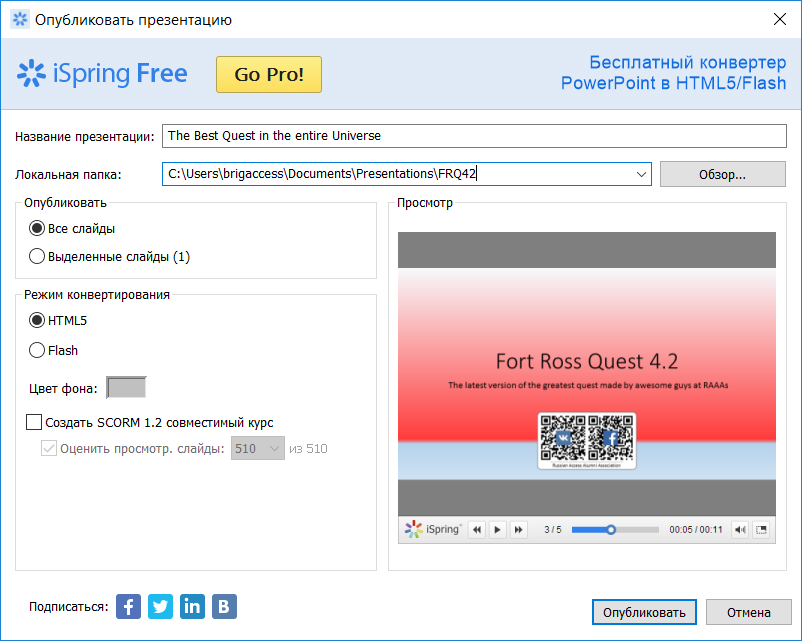
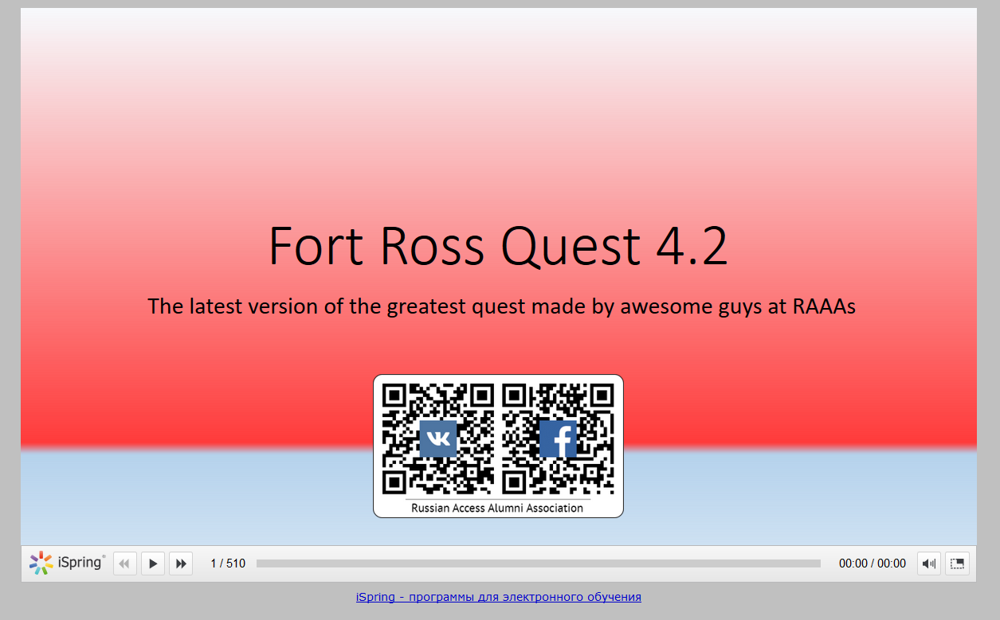
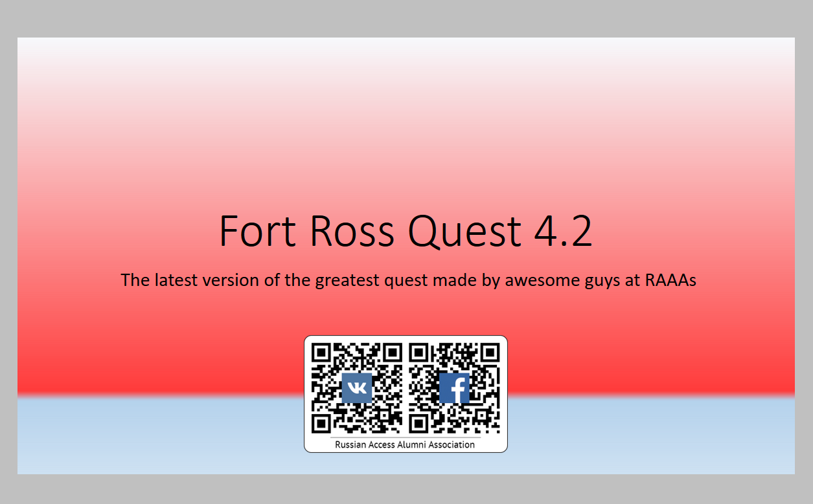

Что нужно сделать, чтобы создать игру в жанре «квест»? Специально для вас, мы ответили на этот вопрос, собрав все свои знания и опыт в данном руководстве. Если вы хотели принять участие в конкурсе квестов "Отправляясь в путешествие из Форт-Росса", но не знали, с чего начать, то этот материал даст вам все необходимые сведения. В нем мы подготовили и структурировали теоретический минимум, необходимый для создания игры в жанре «квест» с минимальной необходимостью в программировании. Также мы готовы помочь вам в разработке – о том, что мы предлагаем, вы можете узнать в разделе "Нужна помощь?".
Квест (англ. quest), или приключенческая игра (англ. adventure game) — один из основных жанров компьютерных игр, представляющий собой интерактивную историю с главным героем, управляемым игроком. Важнейшими элементами игры в жанре квеста являются собственно повествование и обследование мира <...> .
В самом начале любой разработки лежит идея – то, вокруг чего в дальнейшем будет построена наша игра. Основой для игры в жанре «квест», как следует из определения, является какая-то история – сюжет игры. Отсюда следует, что главная идея для вашей игры должна быть главной идеей её сюжета (в отличие, например, от аркадных игр, в которых упор сделан на игровой процесс и где идеей является его описание), а это в свою очередь значит, что бо́льшая часть времени у вас должна уйти именно на проработку сценария. Идея должна укладываться в одно-два предложения, быть четко сформулированной и достаточно интересной. Если это звучит для вас сложно, есть две хорошие новости. Во-первых, в интернете вы можете найти руководства по созданию сценариев, где приводятся шаблоны, по которым вы можете создать свою идею (не обязательно искать руководства для создания именно игровых сценариев – подойдут и книжные). Во-вторых, организаторы уже предложили вам вопросы, на которые вам нужно ответить для того, чтобы сюжет игры соответствовал теме конкурса:
Представьте жизнь вашего ровесника, который родился в Форт-Россе в начале XIX столетия. Как он или она росли и взрослели? Какие еще места, исторически связанные с совместной историей России и США, они посетили? Какую роль они играли в развитии Российско-Американских отношений? Создайте квест о достижениях, впечатлениях, суждениях и приключениях вашего сверстника, живущего в позапрошлом веке. Пожалуйста, убедитесь, что ваш квест исторически верен и факты, используемые в нем, подтверждены надежными и корректными источниками.
Не нужно забывать о том, что нашему герою должно быть примерно 15-16 лет, и что он родился в крепости, что в свою очередь означает, что он с большой долей вероятности является метисом. В результате, у вас может получится примерно следующее:
Идея достаточно банальна, но тем не менее, под нее будет достаточно легко писать, так как единственное, что ограничивает ваш полет фантазии в придумывании "приключений" – направления, по которым ходили суда (вы ведь не забыли про историческую достоверность?). Приключения могут поджидать нашего героя даже на корабле – шторм, подтопление, нехватка припасов... К тому же, написанный на основе идеи идеи о морских путешествиях сценарий позволит раскрыть тему конкурса (ответы на вопросы, предложенные организаторами, достаточно легко можно логично завернуть в сценарий, направив корабль нашего героя к берегам Аляски, например).
Предположим, что с идеей вы определились. Самое время выбрать поджанр. Внимательный читатель может спросить: "но ведь мы выбрали жанр «квест», разве этого недостаточно?". К счастью, к жанру «квест» относят совершенно разные по форме, но примерно одинаковые по содержанию игры:
Для нашего примера я выберу жанр текстового квеста, но все нижесказанное справедливо и для других жанров – графические квесты есть ни что иное как визуализация текстовых квестов, а для квеста-головоломки хватит простенького сюжета без детальной проработки.
Теперь необходима структура сценария, согласно которой мы будем писать его в дальнейшем. На этом этапе необходимо в виде плана представить какие-то ключевые события в жизни нашего героя, которые с ним могут произойти в рамках нашей идеи. События должны быть логичными и не должны грубо противоречить историческим фактам. В зависимости от того, насколько детальным и подробным вы хотите сделать свое повествование, вы можете здесь же подробно расписать события более мелкие, приводящие героя от одного ключевого события к другому. Возвращаясь к нашему примеру, можно составить примерно следующую структуру:
Это неполная структура, однако для рассмотрения дальнейших шагов нам вполне хватит и одной части. Поскольку вы ограничены во времени и ресурсах, ваш сценарий может быть куда короче – например, состоять всего лишь из двух частей. На проработку конкретно этих идеи и плана у меня ушло 2 часа времени, если не считать нескольких "тупиковых" идей-предшественников, на проработку которых, суммарно, у меня ушло около 8 часов чистого времени.
После того, как структура сценария готова, осталось проработать его детально. Первым шагом станет создание образов наших персонажей. Кто они? Что ими движет? Чего они хотят? Как они меняются со временем? Нужно ответить на эти вопросы для каждого персонажа, логично объясняя, почему именно то, что вы ответили, является правильным ответом на эти вопросы.
Вторым шагом будет разбиение сюжета на локации – места, которые герой посетит. На локациях могут присутствовать персонажи, с которыми можно поговорить, а также из каждой локации можно перейти как минимум в одну другую локацию. Для первой части, например, такими локациями (в порядке появления на них героя) будут:
При этом не забывайте, что некоторые локации могут меняться со временем (например, на причале перед отправлением будет стоять семья героя), поэтому изменяющиеся локации нужно учесть дважды. Для удобства можно даже нарисовать "карту", где локации соединены стрелками, означающие возможность перехода из одной локации в другую.
Третьим шагом, основываясь на предыдущих двух пунктах, станет проработка диалогов и поручений, получаемых от персонажа. Очевидно, что диалоги должны соответствовать характеру персонажа, а поручения должны быть логичными. Например, начальник крепости дает герою поручение для того, чтобы понять, достоин ли герой звания моряка Российско-Американской компании. Поручения могут также быть "выданы" герою самим героем в зависимости от его характера и обстоятельств, в которых он находится (например, им может двигать его любопытство или страх).
В конечном итоге вы должны получить сценарий, в котором в порядке посещения героем будут расписаны локации с расположенными на них частями поручений, персонажами и их диалогами. А теперь сюрприз: это и есть ваш квест. Да, все то, что вы сделали, уже является квестом. На данном этапе ему не хватает лишь одного – воплощения в виде технической реализации.
Камень преткновения для многих людей, желающих поучаствовать в конкурсе, но не умеющих программировать. К счастью для них, есть несколько способов реализовать свою задумку без знания языков программирования, о которых мы сейчас и поговорим.
Для начала – инструменты, сделанные специально для создания квестов, работающие в вашем браузере. Для текстовых квестов с небольшими вкраплениями графики прекрасно подойдет сервис Squiffy , сделанный для создания Gamebook'ов и поддерживающий экспорт в HTML. Если же вы хотите создать "каноничную" Text Adventure, или же боитесь текстового редактора, для вас создан мощный сервис Quest , единственным недостатком которого, пожалуй, является лишь отсутствие возможности выгрузить свой квест в HTML. Оба этих сервиса имеют подробную справочную информацию, поэтому я не буду расписывать процесс работы с ними.
<img src="url-картинки">
Если возможностей этих редакторов вам по какой-то причине не хватает, то следующим по сложности способом реализовать свой квест является... Презентация. Да, презентация, вроде тех, что вы много раз делали в PowerPoint, LibreOffice или Google Docs. Слайды этой презентации будут соответствовать локациям, которые вы подробно описали (и возможно даже нарисовали) на прошлом этапе. Если в рамках одной локации происходят разные события (например, в ходе диалога необходимо показать игроку несколько реплик, идущих друг за другом), для каждого состояния локации необходимо создать новый слайд. Для перехода между слайдами нужно использовать гиперссылки, привязать которые можно как к тексту, так и к изображению (инструкции для PowerPoint 2013+ и PowerPoint 2007 )
Но поскольку квест должен быть доступен онлайн, рассмотрим способы опубликовать презентацию в интернете так, чтобы ее могли просмотреть в браузере, ничего не скачивая:
Для конвертирования нужна специальная программа, и мы воспользуемся бесплатной программой iSpring Free (платной версией которой, к слову, пользовалась команда-победитель прошлого конкурса). Ее возможности достаточно ограничены в сравнении с платной версией, однако это единственное бесплатное решение на рынке, да и возможностей её нам вполне хватит. После того, как ваш квест-презентация готов, и вы прошли его в PowerPoint, установите программу, скачав её с официального сайта. Затем перезапустите PowerPoint, чтобы на панели инструментов появился пункт "iSpring Free 8":
Осталось лишь нажать кнопку "Публикация", выставить параметры экспорта так, как указано на рисунке (папку сохранения и название презентации придумайте сами :)...
...и наша презентация превратилась в HTML-страничку, на которой мы уже можем посмотреть результат:
Однако, так же как и в случае с облачными сервисами, на экране все равно есть ненужные нам элементы управления, слайды также переключаются по щелчку мыши (и даже по нажатию "стрелочек" на клавиатуре), а нарисованные предметы-ссылки предательски выдают себя курсором, хотя и должны быть спрятаны. Но не нужно волноваться: в отличие от облачных сервисов, здесь мы имеем полный контроль над тем, что видит пользователь, и нам нужно поправить всего несколько моментов. К сожалению, эти моменты может исправить только тот, кто понимает, как устроены веб-странички, и для исправления нужно все же немного программирования. К счастью, мы в RAAAs заботимся о вас, и потому запаковали все необходимые изменения в программу, и всё, что от вас требуется теперь – скачать эту программу, поместить её в папку с вашим квестом (в одной папке с файлом index.html и папкой data) и запустить её.
Программа уберет всё лишнее с экрана и запретит переключать слайды по нажатию клавиши мыши или "стрелок" на клавиатуре так, чтобы переходы между слайдами можно было осуществить только по ссылкам. Также, для всех изображений-ссылок, которые вы хотите сделать "скрытыми" (чтобы курсор над ними не менял свою форму, а браузер не показывал, куда ведет ссылка) в вашей презентации, необходимо установить параметр "замещающий текст" в значение hidden. О том, как это сделать, вы можете узнать здесь (для PowerPoint 2007) или здесь (для PowerPoint 2013+)
В результате использования программы мы получим примерно следующее:
На этом всё, и вы уже можете попробовать пройти квест в своем браузере. После того, как вы вдоволь наиграетесь, перейдем к следующей части.
Если же вас не устраивает и этот метод, и вы хотите сделать что-то другое, к вашим услугам – конструкторы сайтов, на любой вкус и цвет. Правда, здесь вам скорее всего пригодятся базовые навыки HTML, CSS и Javascript. Этот вариант подойдет вам, если вы уже работали с конструкторами сайтов, или у вас есть желание изучить эти технологии подробно. Изучение HTML вы можете начать здесь или здесь
Следующий по сложности вариант мы не будем рассматривать лишь потому, что все, кто способен на его реализацию, и без этого руководства прекрасно знают, что нужно делать. Оставлю лишь одно напоминание: для интерактивных картинок давно придумали <map>.
Если вы воспользовались Squiffy, iSpring или же настольным конструктором сайтов, то к этому моменту у вас есть отдельная папка с содержимым вашего сайта. Для того, чтобы вашу игру увидел весь мир, вам осталось лишь загрузить её в интернет. Но возникает вопрос – куда именно можно загрузить её так, чтобы к ней могли иметь доступ? Мы готовы предложить вам несколько вариантов, опять же, по возрастанию сложности:
ваше-имя-пользователя.github.ioваше-имя-пользователя.github.io, поставив галочку напротив пункта "Initialize this repository with a README"ваше-имя-пользователя.github.io через пару минут и увидеть, что ваш сайт доступен в интернете.В дополнение ко всему, вы можете захотеть иметь красивое имя, по которому ваш сайт будет доступен. Это можно сделать и бесплатно, получив имя в зоне .tk , но сайты в этой доменной зоне не индексируются поисковиками, что может быть неприемлимо для вас. Более надежным вариантом станет покупка желаемого домена в любой доменной зоне, на которую у вас хватит финансов. В зависимости от доменной зоны, цены колеблются от нескольких сотен до сотен тысяч рублей – например, домен в зоне .ru обойдется вам в пределах пятисот рублей за первый год обслуживания, в то время как за "красивые" доменные имена в зоне .com регистраторы могут просить миллиарды рублей. Чтобы вам было легче разобраться в ценах, вы можете воспользоваться сайтом tld-list.com , где собраны лучшие предложения.
Также, мы предлагаем воспользоваться доменным именем raaas.ru, но об этом мы поговорим подробнее в следующем разделе
Это руководство было написано с целью помочь вам на каждом этапе создания вашей игры для конкурса, но наша помощь на этом не заканчивается. Мы предлагаем вам помощь:
https://yourquest.raaas.ru или https://raaas.ru/hosts/yourquest/, всё так же безвозмездно.Для того, чтобы получить помощь, нужно всего лишь написать нам на электронную почту changemakers@raaas.ru письмо с темой "Нужна помощь с хостингом/доменом/вторжением инопланетян". В письме расскажите, откуда вы и что за игру вы создали, а также приложите .zip архив (или ссылку на него, если он оказался слишком большим) с вашей игрой. Мы постараемся связаться с вами как можно быстрее.
Также, если после прочтения этого текста у вас остались вопросы, вы можете задать их, написав письмо на всё ту же электронную почту. На самые интересные (или часто задаваемые) вопросы ответы будут даны в новых версиях этого руководства.